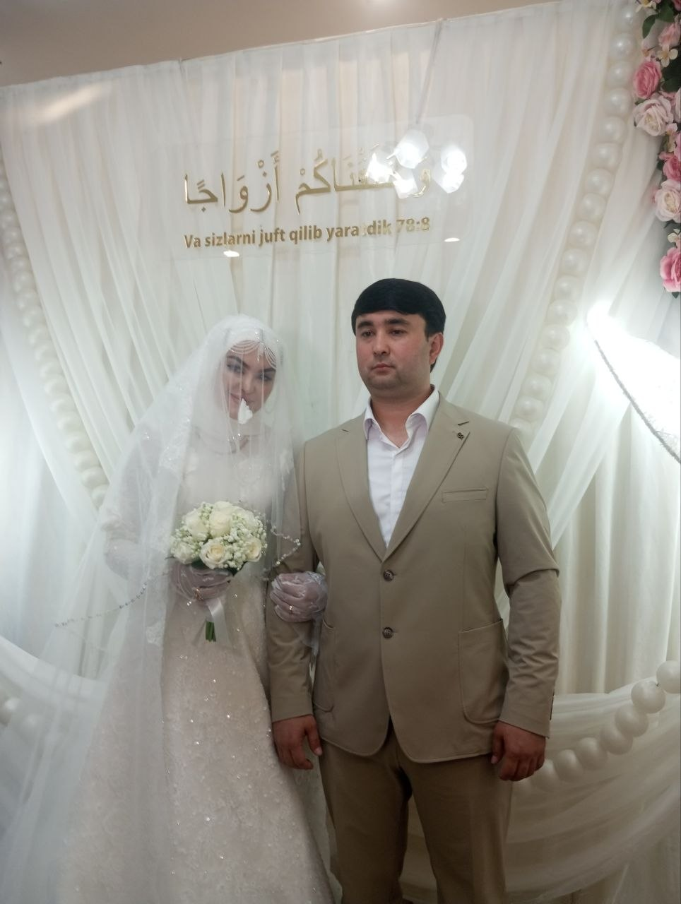

$ ochish
وَخَلَقْنَاكُمْ أَزْوَاجًا
«Va sizlarni juft qilib yaratdik»
Naba surasi, 8-oyat
← orqaga
davom →
To'ylaringiz muborak bo'lsin!
xatni qayta o'qish
boshidan
To'ylaringiz muborak bo'lsin!
— ukang